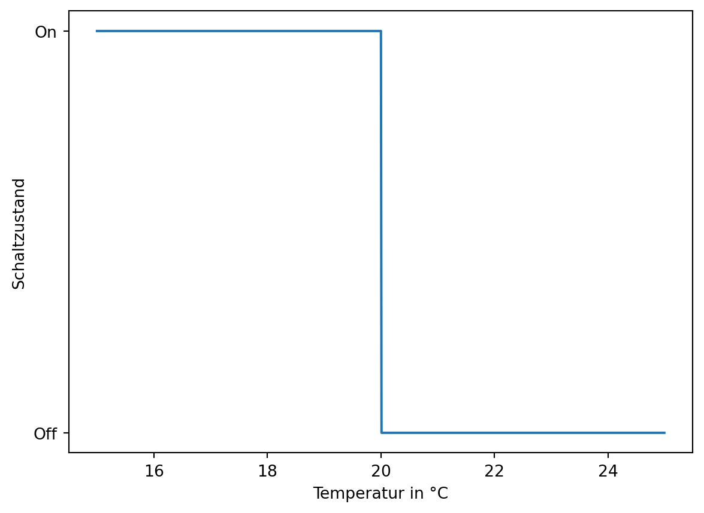
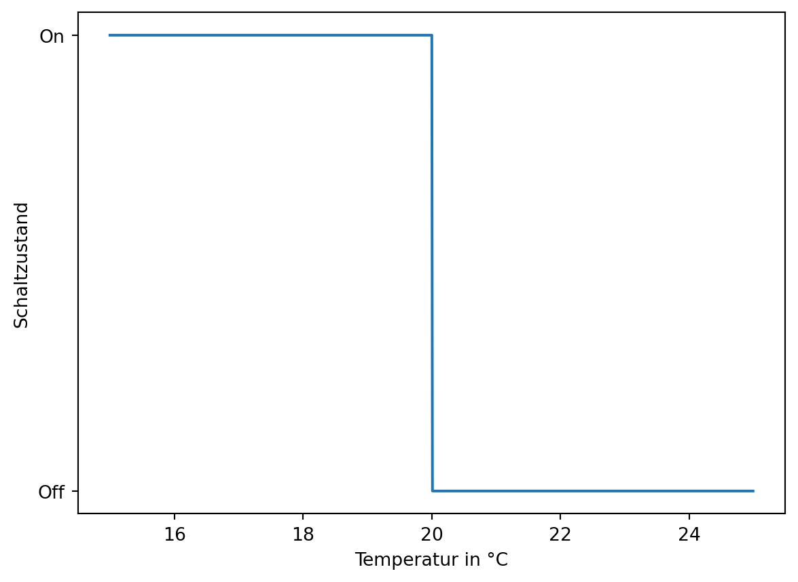

\(\Delta T_{ein}\) … Einschaltschwelle
\(T\) … Temperatur
\(\Delta T_{aus}\) … Ausschaltschwelle
\(T_{ref}\) … Referenz Temperatur

In diesem Teil des Skriptums geht es darum wie wir Maschinen und Schaltungen dazu bringen, trotz Störeinflüssen das gewünsche Verhalten zu Zeigen. Zum Beipiel soll ein Tempomant des Autos die Geschwindigkeit halten, trotz starkem Gegenwindes. Es werden die Grundlagen der Regelungstechnik vermittelt. Dabei wird das theoretische Wissen anhand konkreter Anwendungen erarbeitet.
Viele Aufgaben von Maschinen können auch durch Steuern umgesetzt werden. Eine Regelung erlaubt es aber auf unerwünschte Einflüsse, sogenannte Störgrößen, zu reagieren. Als Beispiel soll der Tempomat, Geschwindigkeitsregelanlage, des Autos dienen. Die Aufgabe des Tempomates ist es, die Geschwindigkeit, Regelgröße, konstant zu halten. Als unerwünschte Einflüsse, Störgrößen, sind alle physikalischen Größen zu betrachten, welche die Geschwindigkeit beeinflussen. Beispiele sind die Steigung der Straße und Wind.
Die Geschwindigkeit des Autos wird über die Leistung, Stellgröße, bestimmt. Führt die Straße Bergauf wird mehr Leistung für die gleiche Geschwindigkeit benötigt. Es muss also die Leistung laufend angepasst werden, um eine konstante Geschwindigkeit zu erhalten.
Bei einer Steuerung würde eine Leistung eingestellt werden und sich daraus eine Geschwindigkeit ergeben. Dieses wäre jedoch nur für einen voreingestellten Fall identisch mit der gewünschten Geschwindigkeit.
Regeln ist ein Vorgang, bei dem der IST-Wert einer Größe gemessen und, durch Nachstellen der Stellgröße, dem SOLL-Wert angeglichen wird.
Dazu wird das Ergebnis an den Eingang zurück geführt und vom Sollwert subtrahiert. Es entsteht eine Rückkopplung. Durch das negative Vorzeichen handelt es sich um eine Rückkopplung im Spezialfall einer Gegenkopplung. Die Differenz aus dem Sollwert und dem zurückgeführten Istwert ist die sogenannte Regelabweichung welche über den Regler zur Stellgröße wird. Die Stellgröße ist nun die physikalische Größe die die Regelstrecke zum gewünschten Verhalten führt.

Es kann zwischen zwei Arten von Reglern unterschieden werden. Erstere sind einfache Regler die die Stellgröße nur zwischen verschiedenen Zuständen hin und her Schalten können. Zum Beispiel Ein / Aus. Oder die Gänge eines Automatikgetriebes. Diese Regler werden unstetige Regler genannt. Unstetige Regler können gut mittels Hysteresen beschrieben werden.
Der zweite Typ von Regler kann die Stellgröße kontinurierlich anpassen. Diese Regler werden stetige Regler genannt. Stetige Regler können gut mit mathematische Gleichungen im Laplacebereich beschrieben werden.
Klassische unstetige Regler sind Bimetallschalter. Diese werden zum Beipiel bei Heizlüftern eingesetzt. TODO
\(\Delta T_{ein}\) … Einschaltschwelle
\(T\) … Temperatur
\(\Delta T_{aus}\) … Ausschaltschwelle
\(T_{ref}\) … Referenz Temperatur

Der Zweipunktregler kann, wie der name schon sagt, die Stellgröße zwischen zwei Zuständen schalten. Zum Beipiel die Heizung einschalten wenn die Temperatur zu niedrig ist und wieder Abschalten wenn die Temperatur hoch genug ist.
Die Schaltpunkte werden über eine Hysterese definiert.
Für das Verständnis von stetigen Reglern ist es hilfreich die Regelungstechnik mathematisch zu betrachten, da sich die ein Regler sehr gut mit Formeln beschreiben und erklären lässt. In einem eigenen Kapitel soll bewhandelt werden wie Regler praxisnahe implementiert werden können.
Der oben gezeigte Regelkreis, Abbildung 1.1, lässt sich mathematisch als Übertragungsfunktion beschreiben. Hier werden ausschließlich SISO (Single Input Single Output) Systeme betrachtet. Das Bedeutet Systeme die einen Eingang und einen Ausgang haben. Jeder Block kann einzeln mit einer Übertragungsfunktion, analog der Vierpoltheorie aus KSN, beschrieben werden. Wie auch in der Vierpoltheorie kann aber auch eine Verschaltung von Blöcken als Übertragungsfunktion beschrieben werden. Ein Block wird in der Regelungstechnik auch als Strecke bezeichnet.
Die Übertragungsfunktion Beschreibt den Zusammenhang zwischen Ausgang und Eingang. Um die Mathematik möglichst einfach zu halten wird in der Regelungstechnik im Laplace Bereich gearbeitet. Dadurch ist es nicht notwendig die Diffenrentialgleichung bei physikalischen Systemen, die durch eine Differentialgleichung beschrieben werden, zu lösen.
\[ V = \frac{A}{E} \tag{1.1}\]
\(E\) … Eingang
\(V\) … Verarbeitung, die Übertragungsfunktion
\(A\) … Ausgang
Gängige Bezeichnungen der Übertragungsfunktion der einzelnen Blöcke ist wie folgt.
\(M\) … Übertragungsfunktion des Sensors
\(G\) … Übertragungsfunktion der zu Regelnden Strecke
\(R\) … Übertragungsfunktion des Reglers
oder die Anstrengung der Faulen.
Um eine Übertragungsfunktion zu Berechnen muss der Ausgang durch den Eingang dividiert werden. Wird das physikalische System durch eine lineare Gleichung beschrieben ist das sehr Einfach möglich und die Laplace Transformation ist nicht notwendig. Ein Beispiel dafür is das Ohm’sche Gesetz.
\[ R_{ohm} = \frac{U}{I} \tag{1.2}\]
\(U\) … Spannung am Widerstand als Ausgang
\(I\) … Strom am Widerstand als Eingang
\(R_{ohm}\) … Ohm’scher Widerstand als Übertragungsfunktion
Wird das physikalische System aber durch eine Differentialgleichung beschrieben, wie zum Beispiel bei einem Tiefpass, so wäre es notwendig zuerst die Differentialgleichung zu lösen um die Übertragungsfunktion zu berechnen. Hier bietet die Lapalce Transformation eine erhebliche erleichterung.

\[ i_{c}{\left(t \right)} = \frac{\frac{d}{d t} u_{c}{\left(t \right)}}{C} \tag{1.3}\]
\[ i_{c}{\left(t \right)} = \frac{- u_{c}{\left(t \right)} + u_{in}{\left(t \right)}}{R_{ohm}} \tag{1.4}\]
Durch Gleichsetzten von Gleichung 1.3 und Gleichung 1.4 ergibt sich die allgemeine Differenzialgleichung 1. Ordnung für den Tiefpass.
\[ \frac{d}{d t} u_{c}{\left(t \right)} + \frac{u_{c}{\left(t \right)}}{C R_{ohm}} = \frac{u_{in}{\left(t \right)}}{C R_{ohm}} \tag{1.5}\]
\(t\) … Zeit
\(R_{ohm}\) … Ohmscher Widerstand
\(C\) … Kapazität
\(u_{in}{\left(t \right)}\) … Eingangsspannung
\(u_{c}{\left(t \right)}\) … Ausgangsspannung
\(i_{c}{\left(t \right)}\) … Strom
Müsste nun von dieser Differentialgleichung die Übertragungsfunktion, also \(G=Ausgang/Eingang\), angegeben werden, so müsste zunächst die Differentialgleichung gelöst werden.
Die Laplace Transformation bietet hier einen alternativen Weg der mit weiteren Vorteilen verbunden ist wenn es darum geht Blöcke miteinander zu kombinieren oder Aussagen über das System zu treffen.
Die tiefere Mathematik der Laplacetransofrmation überlassen wir hier den Mathematiker:innen und den ersten Semstern eines Studiums. Wir wollen die Laplacetransformation lediglich als Werkzeug zur vereinfachung unserer Arbeit verwenden. Dazu benötigen wir folgende Grundregeln.
Vereinfacht ist die Laplacetransformation als eine Übersetzung aus dem Zeitbereich, also mit der varaible \(t\), in den Frequenzbereich mit der Variable \(s\) zu verstehen. Die Übersetzung erfolgt in vielen Fällen sehr einfach mittels Tabelle. Hier wird die Transformation nur für ausgewählte Signale und mathematische Operationen angeführt.
| Zeitbereich x(t) | Frequenzbereich X(s) | Bemerkung |
|---|---|---|
| \(\frac{d \ x(t)}{d \ t}\) | \(s \cdot X(s) - x(0)\) | Transformation der Ableitung nach der Zeit, \(x(0)\) ist dabei der Wert zum Zeitpunkt Null. Bei einem Kondensator wäre dies zum Beispiel der Ladezustand zu Beginn. |
| \({ \int x(t) \, d \ t}\) | \(\frac{1}{s} \cdot X(s)\) | Transformation der Integration über der Zeit |
| \(\delta (t)\) | \(1\) | Transformation des Impulses |
| \(\sigma (t)\) | \(\frac{1}{s}\) | Transformation des Sprunges |
| \(e^{at}\) | \(\frac{1}{s -a}\) | |
| \(\frac{1}{a} e^{\frac{-t}{a}}\) | \(\frac{1}{1 + as}\) |
Werden Blöcke kombiniert können die resultierenden Übertragungsfunktionen berechnet werden.
Zur vereinfachung kann die Übertragungsfunktion des Sensors mit \(M=1\) angenommen werden, \(M=1\), wenn dieser im Verhälnis zur Strecke und zum Regler vernachlässigbar ist. Dies ist zum Beispiel der Fall wenn der Sensor viel schneller ist als die Strecke und der Regler. Diese Vorraussetzung ist für viele Systeme gegeben.
Für den Regelkreis, Abbildung 1.1, ergebn sich folgende Möglichkeiten.
Die Führungsübertragungsfunktion gibt das Verhältnis zwischen Sollgröße und Istgröße an. Sie Beschreibt damit das Verhalten des Regelkreises mit der Sollgröße als Eingang und der Istgröße als Ausgang. Ist eine Regelstrecke ideal so ist die die Führungsübertragungsfunktion gleich Eins.
\[ F_{w} = \frac{G M R}{G M R + 1} \tag{1.6}\]
\(F_{w}\) … Führungsübertragungsfunktion
Die Schleifenübertragungsfunktion ist die Übertragungsfunktion des offenen Regelkreises, also ohne Rückkopplung und ist im Laplace Bereich eine einfache Multiplikation.
\[ F_{o} = G R \tag{1.7}\]
\(F_{o}\) … Schleifenübertragungsfunktion
Die Störübertragungsfunktion beschreibt wie sich die Störgröße auf den Ausgang auswirkt.
\[ F_{s} = \frac{G}{F_{o} + 1} \tag{1.8}\]
\(F_{s}\) … Störübertragungsfunktion